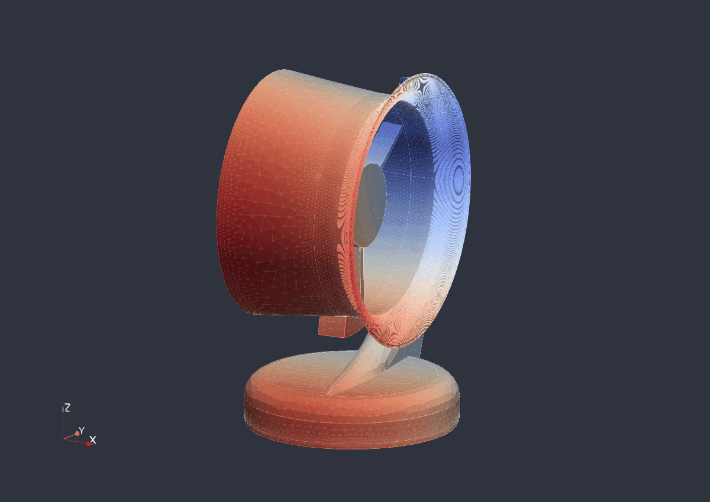
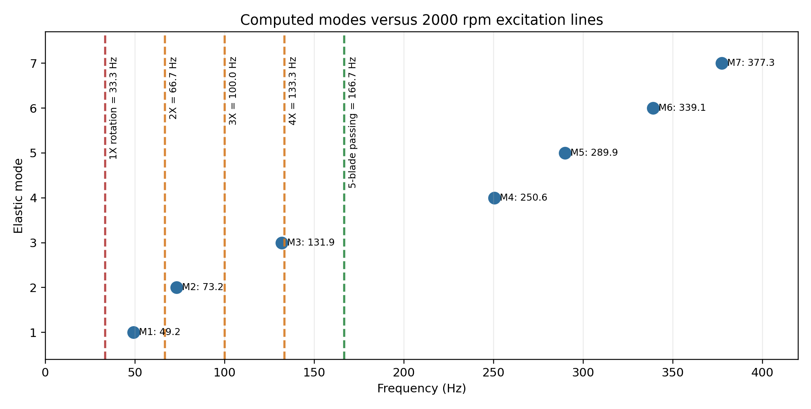
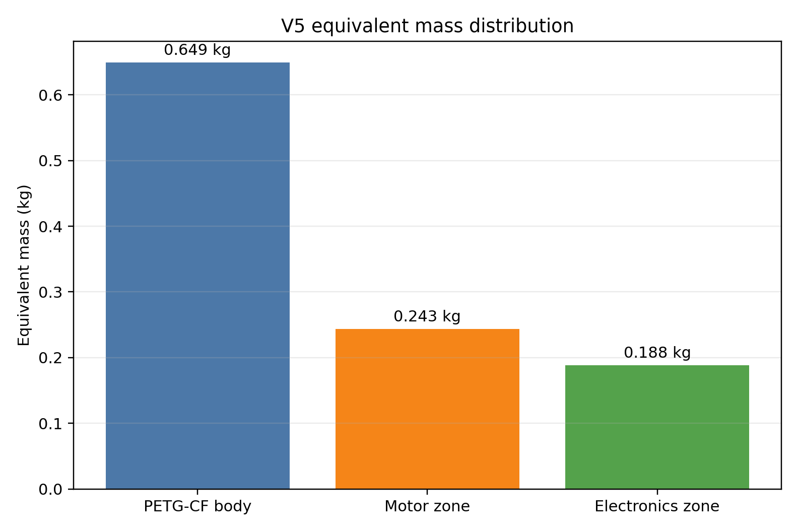
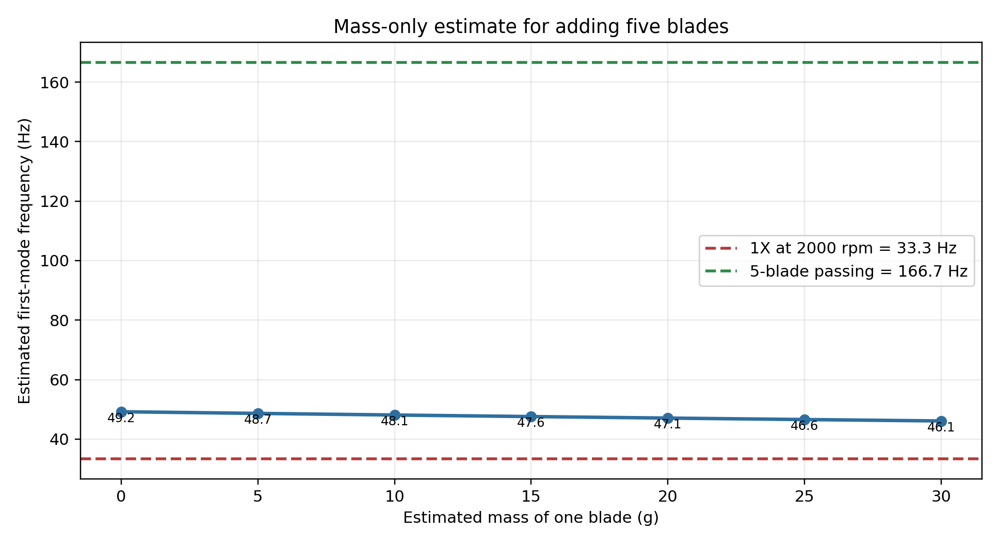

Key Results
Modal Frequencies
| Mode | Frequency | Physical reading | Excitation comparison |
|---|---|---|---|
| 1 | 49.214 Hz | Global housing bending / sway of the slender support path. | Above 1X rotation at 33.33 Hz. |
| 2 | 73.181 Hz | Second global flexible shape of the housing and ring support. | Not close to 1X; below typical blade-passing for five blades. |
| 3 | 131.946 Hz | More local/global mixed deformation of the ring and support. | Closer to the five-blade blade-passing frequency than modes 1 and 2. |
Animated Mode Shape

The first flexible mode is governed by the global stiffness of the base, vertical support, and ring/hub load path. This is the mode most likely to be affected by support boundary conditions such as a table contact, screws, rubber feet, or a circular gasket.
The GIF is generated from the final oriented result file:
04_RESULTATS_PARAVIS/carter_modal_petgcf_composants_v5_socle_xy_z_modes_paravis.med.
Excitation Map

At 2000 rpm, the shaft rotation frequency is 33.33 Hz. If five blades are added, the blade-passing frequency is 5 x 33.33 = 166.7 Hz. The first mode is above 1X rotation, while the third mode is the closest of the first three modes to the five-blade excitation.
This comparison is a screening result. Final acceptance should use the actual motor speed range, the number of blades, and measured or simulated forcing content.
Mass Model

| Zone | Mass | Representation |
|---|---|---|
| PETG-CF structure | 0.649 kg | Main cleaned fan housing volume, PETG-CF equivalent isotropic material. |
| Motor hub zone | 0.243 kg | Equivalent density in a front-hub spherical zone. |
| Base electronics zone | 0.188 kg | Equivalent density in a lower-base spherical zone. |
Five-Blade Mass Estimate

The blade estimate uses a mass-only scaling:
f_new = f_0 sqrt(M_0 / (M_0 + m_blades)).
It does not add blade stiffness, aerodynamic loading, gyroscopic terms, or a rotating assembly model.
For example, adding five blades with a total mass of 100 g would move mode 1 from 49.214 Hz to roughly 47.1 Hz. Heavier blades lower the frequency further, but the current conclusion stays the same for the 1X speed at 2000 rpm.
Circular Gasket Under The Base
Drop / Shock Study
Simple first approach
- Choose a drop height, for example 0.8 m.
- Compute impact speed: v = sqrt(2 g h), about 3.96 m/s for 0.8 m.
- Replace the impact by an acceleration pulse at the base or by an imposed velocity followed by deceleration.
- Check peak stresses and deformation trends, not certification-level failure.
More realistic approach
- Use nonlinear transient dynamics with table contact.
- Include rubber/gasket damping if present.
- Use PETG-CF failure allowables from tests or a conservative supplier datasheet.
- Run several orientations: base-first, ring-first, corner/support-first.
Open The Study Files
| Purpose | File |
|---|---|
| English LaTeX PDF report | assets/modal_report_petgcf_v5_en.pdf |
| ParaViS result file | 04_RESULTATS_PARAVIS/carter_modal_petgcf_composants_v5_socle_xy_z_modes_paravis.med |
| Code_Aster command file | 03_CODE_ASTER/carter_modal_petgcf_composants_v5_socle_xy_z.comm |
| Mesh used for the run | 02_MAILLAGE/ventilateur_1_meshprep_socle_xy_z_netgen.med |
| Run instructions | 03_CODE_ASTER/COMMENT_RELANCER_ETUDE_V5.md |